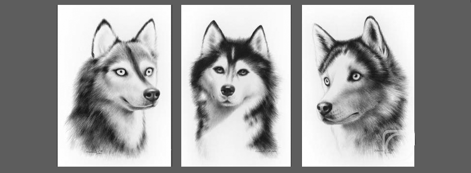

Соба́ка — домашнее животное, одно из наиболее распространённых. Собаки известны своими способностями к обучению, любовью к игре, социальным поведением. Выведены специальные породы собак, предназначенные для различных целей: охоты, охраны, тяги гужевого транспорта и др., а также декоративные породы.


- Мокрый нос собаке нужен, чтобы определить направление запаха.
- Собаки инстинктивно требуют одобрения лидера перед каким-либо поступком.
- Всего существует 703 породы чистокровных собак.
- Собаки являются прямыми потомками волков.
- Собаки умеют распознавать человеческие эмоции.
- Шум дождя вреден для собачьих ушей.
- Собаки могут страдать от депрессии.
- Собака – первое животное, побывавшее на орбите Земли
- Шоколад является ядом для собак. В нем содержатся вещества, которые вызывают поражение ее центральной нервной системы.
Собака была священным животным многих богов. Так, например, Анубис представлялся жителям Древнего Египта в виде человека с головой шакала или собаки. Он сопровождал души усопших в зал судилища, где взвешивались их сердца на специальных весах, уравновешенных истиной. Центром культа Анубиса считался Кинополь — «город собак». И если кто-либо из жителей других городов убивал собаку из Кинополя, то это считалось достаточным поводом для объявления войны.
 В царстве Аида, на берегах священной реки Стикса, чудовищные собаки сопровождали свиту богини Гекаты (в греческой мифологии — богиня мрака, ночных видений и чародейства), которая считалась помощницей при колдовстве. Кроме того, она насылала на спящих людей кошмары и тяжелые сны. Существовало поверье, будто из всех живых созданий, включая и человека, эту богиню могли видеть только собаки.